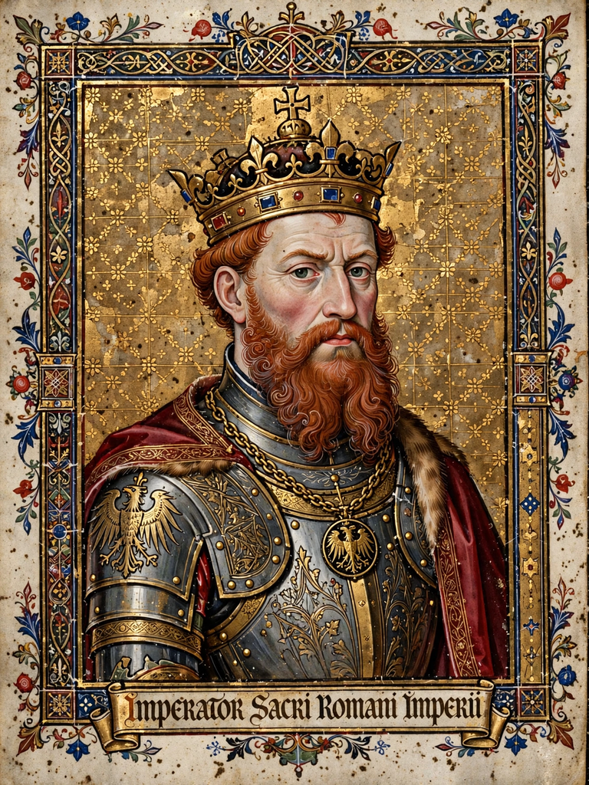

Frederick Barbarossa

| Reign | King of Germany 1152–1190; Holy Roman Emperor 1155–1190 |
|---|---|
| Born | c. 1122 |
| Died | 10 June 1190, Saleph River (Göksu), Anatolia |
| House | Hohenstaufen |
| Spouse | Beatrice I, Countess of Burgundy |
| Successor | Henry VI |
Frederick I (1122 – 10 June 1190), known as Frederick Barbarossa ("Redbeard" in Italian), was Holy Roman Emperor from 1155 until his death. Elected King of Germany in 1152, he sought to restore the glory of the empire, assert imperial rights in Italy, and reconcile the rival houses of Hohenstaufen and Welf.
Reign
Barbarossa campaigned repeatedly in Italy, where he confronted the Lombard communes and a hostile papacy. After destroying Milan in 1162, his ambitions were checked by the Lombard League's victory at Legnano in 1176, leading to the Peace of Constance (1183), which recognised communal autonomy. In Germany he broke the power of his cousin Henry the Lion, Duke of Saxony and Bavaria, in 1180, redistributing his duchies. His marriage to Beatrice of Burgundy extended imperial influence westward, and his court saw a flowering of chivalric culture; he also canonised Charlemagne in 1165.
The Third Crusade and death
Answering the call to recover Jerusalem after Saladin's victory at Hattin (1187), Frederick took the cross and led the largest crusading army of the era overland through Byzantium and Anatolia, defeating the Seljuks at Iconium in May 1190. On 10 June 1190 he drowned in the Saleph River (modern Göksu) in Cilicia, before reaching the Holy Land. His army largely dispersed, and German legend later transformed him into a sleeping hero — the Kyffhäuser legend — who would one day return to restore the empire.